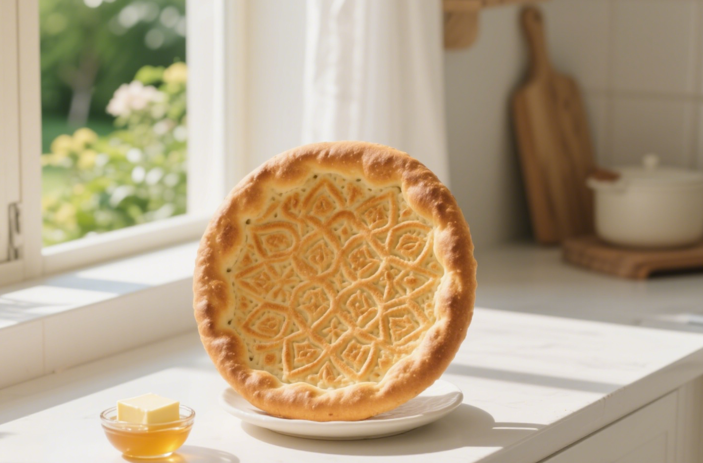
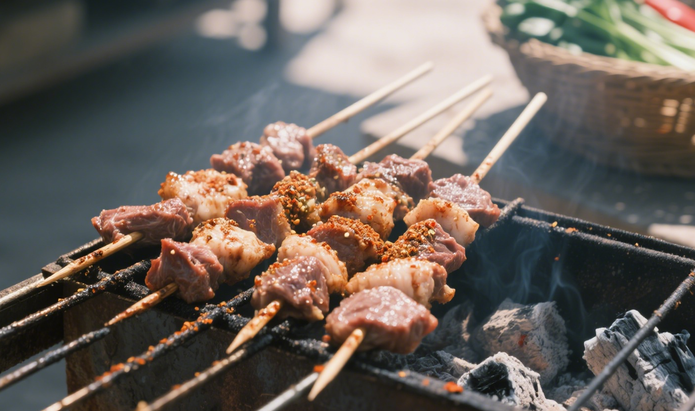
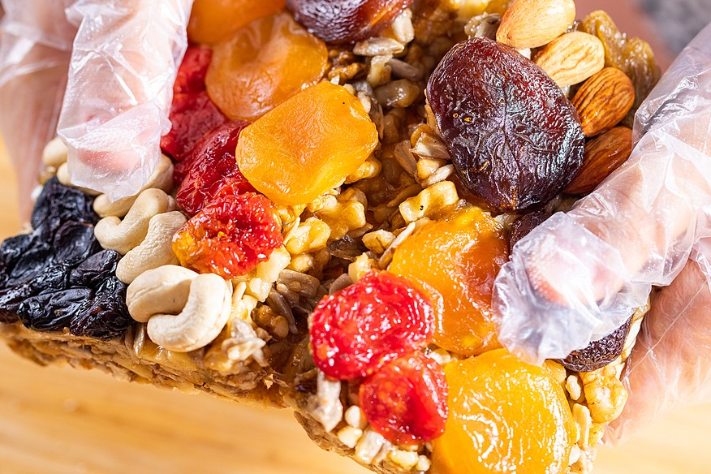
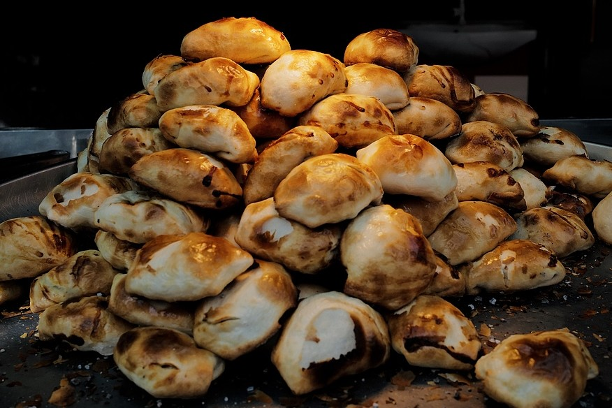

新疆美食的起源与传承
新疆，这片古老而神秘的土地，孕育了丰富多彩的美食文化。从古丝绸之路的繁华贸易到各民族的融合交流，新疆美食在历史的长河中不断演变和发展，形成了如今独具特色的风味。接下来，让我们一起走进新疆美食的起源之旅，探寻那些令人垂涎的美味背后的故事。
馕饼——穿越千年的面食传奇
馕，是新疆最具代表性的面食之一，其历史可以追溯到古代。早在古代丝绸之路时期，馕就成为了商队和旅人的重要食物。由于其制作简单、便于携带和保存，馕在新疆地区广受欢迎。传统的馕制作工艺传承至今，选用优质小麦粉，经过和面、发酵、擀制、烤制等多道工序，烤制出的馕外皮酥脆，内部松软，散发着浓郁的麦香。馕的种类繁多，如芝麻馕、核桃馕、油馕等，每一种都有其独特的风味和制作方法。在新疆，馕不仅是日常饮食的一部分，还承载着丰富的文化内涵，是维吾尔族等民族传统饮食文化的重要组成部分。

羊肉串——烤炉上的美味传承
提到新疆美食，羊肉串无疑是人们最熟悉和喜爱的之一。羊肉串的起源与新疆的游牧文化密切相关。在古代，牧民们在放牧过程中，为了方便食用羊肉，便将羊肉切成小块，用木棍串起来，在篝火上烤制。这种独特的烹饪方式不仅保留了羊肉的鲜嫩多汁，还赋予了它独特的烟熏香味。随着时间的推移，羊肉串的制作工艺不断改进和完善，如今的新疆羊肉串，选用肥瘦相间的羊肉，加入孜然、辣椒粉等调料，烤制出的羊肉串外焦里嫩，香气四溢，令人回味无穷。在新疆的街头巷尾，随处可见烤羊肉串的摊位，那独特的烤肉香气吸引着无数食客。

手抓饭——凝聚亲情的美味佳肴
手抓饭，是新疆各民族共同喜爱的传统美食，其历史源远流长。手抓饭的制作过程体现了新疆人民对食物的尊重和热爱。选用优质大米，搭配新鲜的羊肉、胡萝卜、洋葱等食材，经过精心炖煮，使米饭吸收了羊肉和蔬菜的精华，口感软糯，香气扑鼻。手抓饭的名称来源于其独特的食用方式，人们用手抓起饭团，蘸上浓郁的肉汁，大口品尝，这种豪爽的吃法也体现了新疆人民的热情好客。在新疆，手抓饭不仅是日常饮食中的美味佳肴，更是逢年过节、招待宾客时不可或缺的传统美食，它凝聚着家人和朋友之间的情感，象征着团圆和幸福。

切糕——甜蜜的味蕾记忆
切糕，是新疆特色的小吃之一，以其独特的口感和丰富的营养深受人们喜爱。切糕的主要原料是糯米、核桃仁、葡萄干等，经过蒸煮、压实、切块等工序制作而成。糯米的软糯与核桃仁的香脆、葡萄干的甜润相互融合，口感丰富，营养丰富。在新疆，切糕不仅是日常的零食，还常常作为礼物赠送亲友。它的制作工艺传承了新疆人民对美食的精致追求，每一口切糕都蕴含着甜蜜的味道和美好的回忆。

烤包子——面皮与馅料的完美邂逅
烤包子，是新疆极具特色的面点之一，其历史同样悠久。烤包子的制作工艺独特，选用薄而韧的面皮，包裹着精心调制的羊肉馅，放入馕坑中烤制而成。烤制出的烤包子外皮金黄酥脆，内馅鲜嫩多汁，香气四溢。在新疆，烤包子不仅是早餐的常见选择，也是人们日常喜爱的小吃之一。它将面皮的酥脆与馅料的鲜美完美结合，展现了新疆美食的独特魅力。烤包子的制作工艺传承了新疆人民对食物的精细加工和独特口味的追求，每一口烤包子都让人回味无穷。
